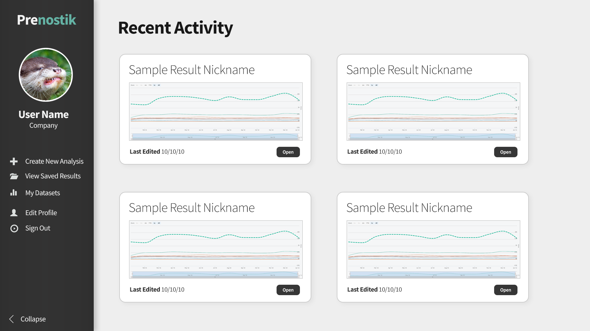
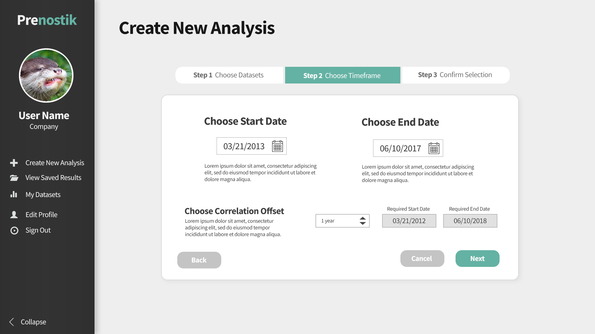
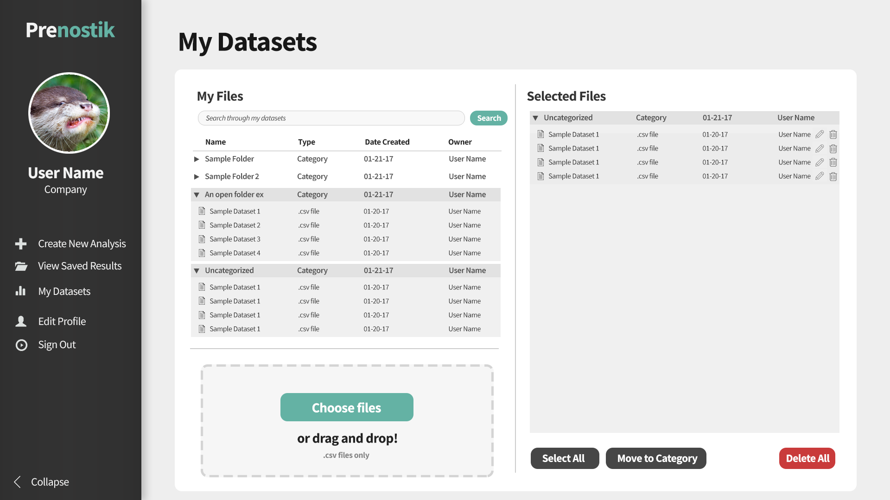
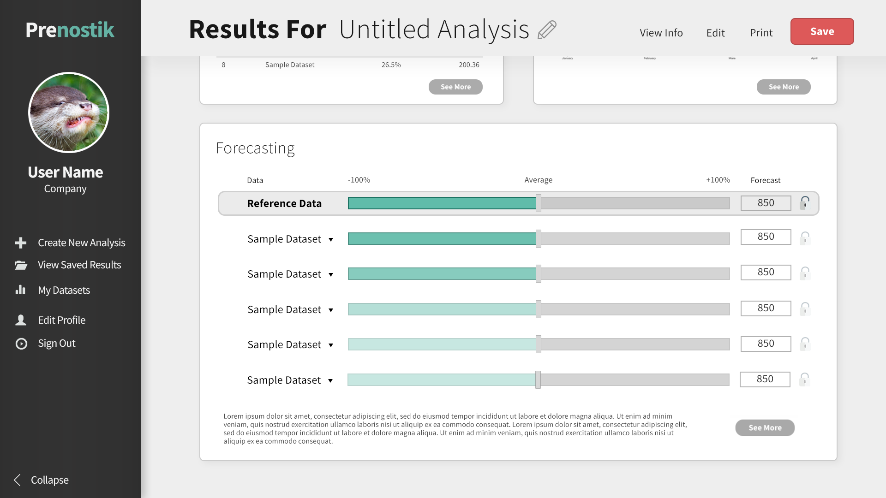
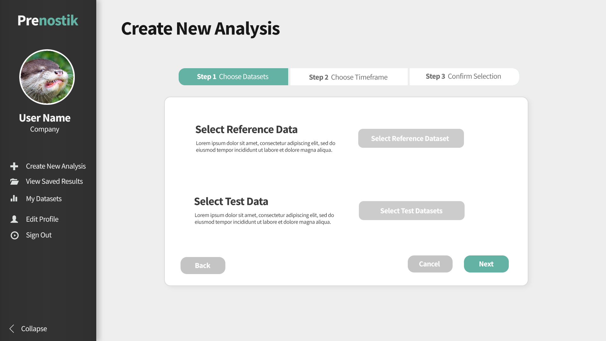
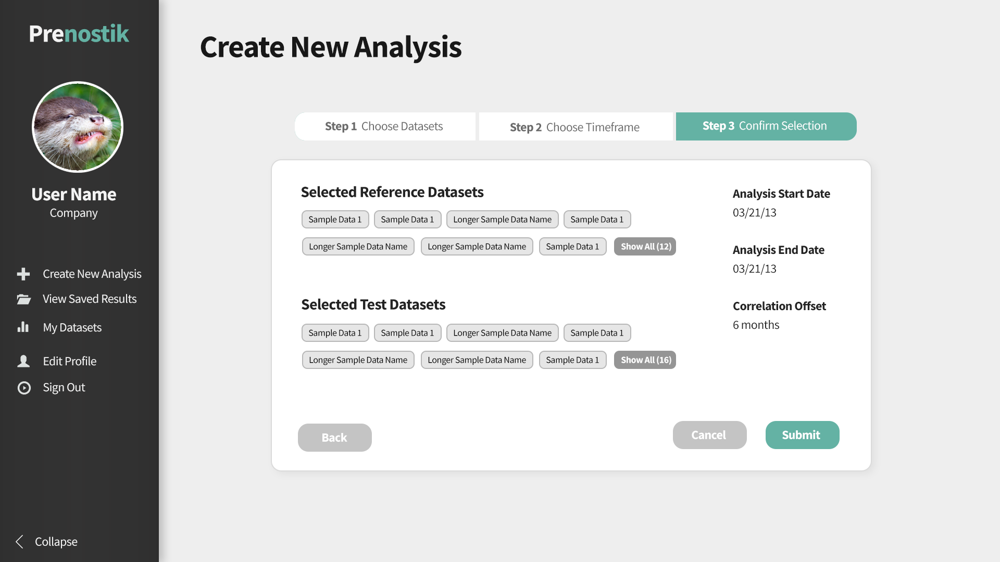
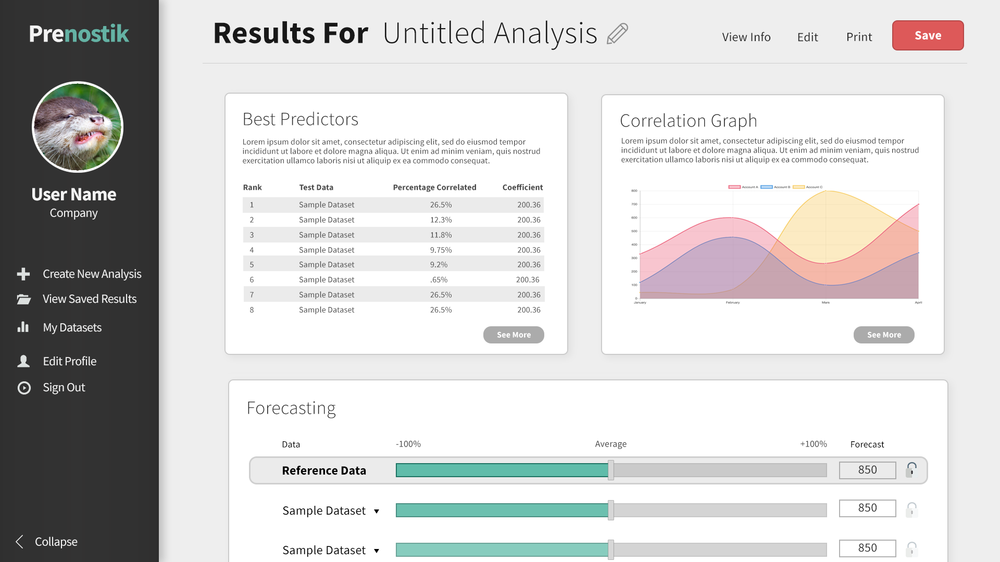
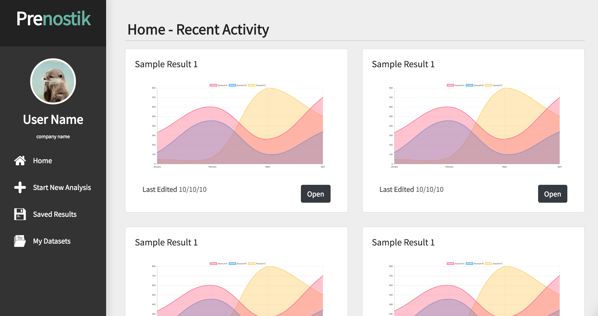
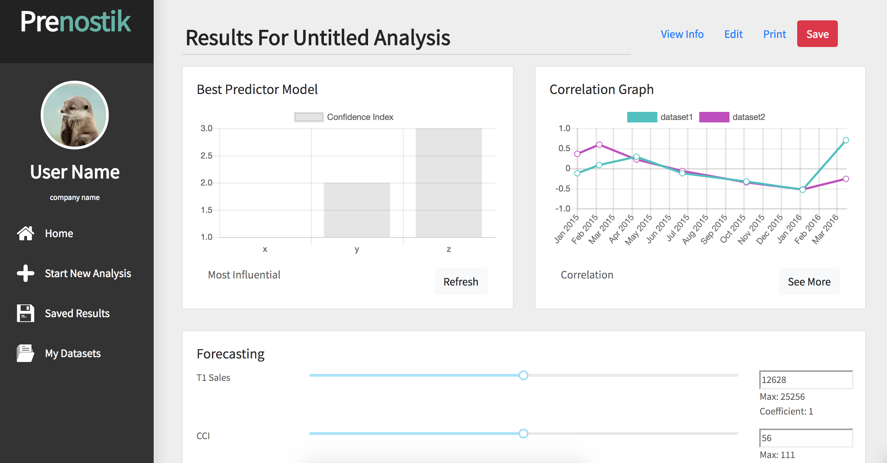

Return
PRENOSTIK
Project Manager. Lead UI/UX Designer.
Completed for Project in Software System Design Course.
Apr-June 2018.
Concepts / Mockups
These images show the most recent iteration of proposed redesigns for Prenostik's webportal.
All images were created using Photoshop.







Invision Prototypes
These images were used in walkthrough prototypes created with Invision.
First Prototype |
Second Prototype |
Third Prototype
Final Design
These screenshots show pages of the most recent UI prototype at the conclusion of the course.
The front-end was built using Bootstrap 4 and React.
Home Page

Results Page
